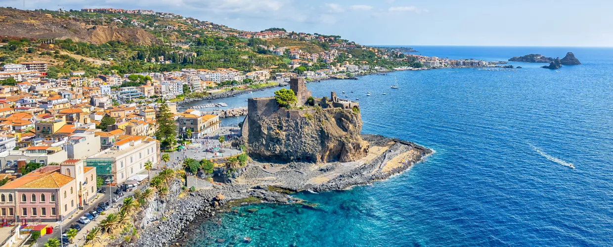
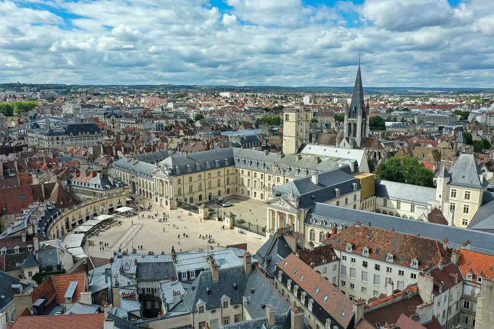

Italy - Sicily
Italy - Sicily
Caltagirone
Historic hilltop city. 2 candidate zones: historic centre and new centre.
Analysis complete - 2 zones
↗

Italy - Sicily
Aci Castello
Coastal town near Catania. Compact urban fabric along the Ionian coast.
Analysis complete
↗

 France - Bourgogne
France - Bourgogne
Dijon
Capital of the Burgundy region. Known for its well-preserved medieval centre.
Analysis complete - 3 zones
↗